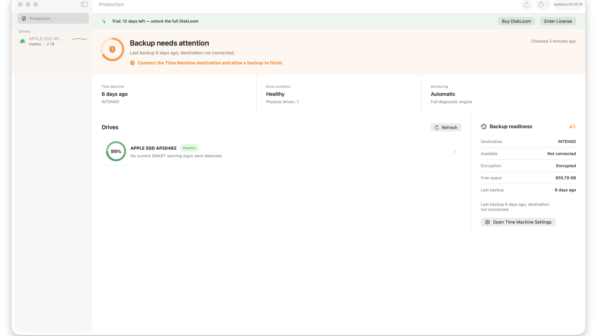
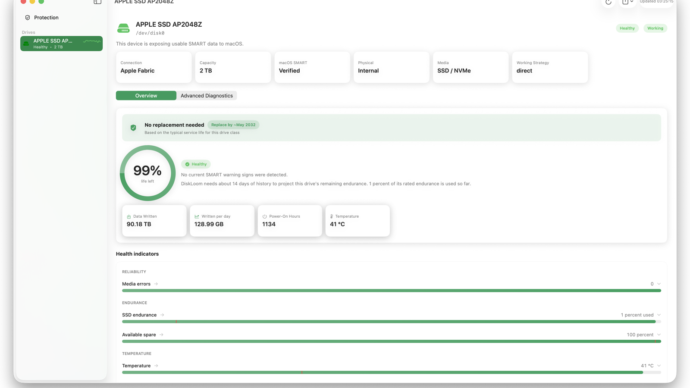
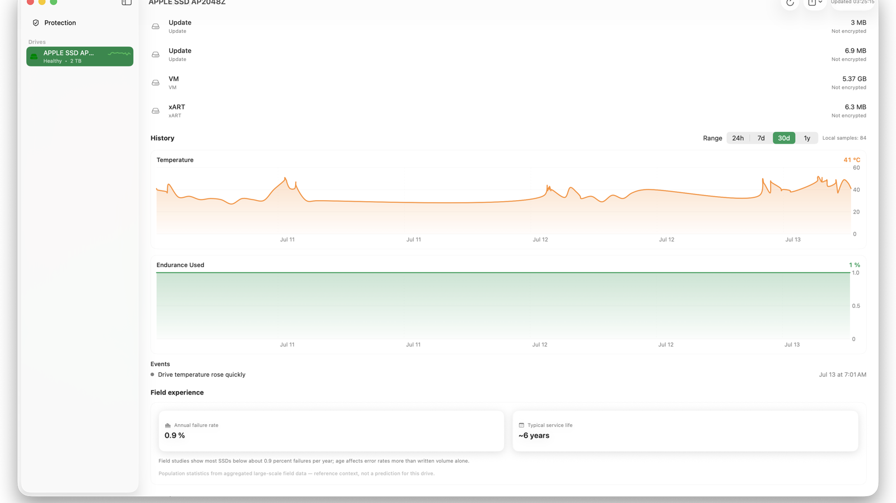

Protection overview
See drive condition, Time Machine recency, and the next action in one quiet view.
Drive health for macOS
Know what is changing inside your drives and whether your latest backup is ready before a warning becomes a failure.
Early warning
DiskLoom tracks temperature, endurance, spare capacity, media errors, unsafe shutdowns, connection events, and backup readiness. Every warning explains the signal and rule that triggered it, while model-specific endurance references add useful context where available.
A closer look



Built for daily use
See drive condition, Time Machine recency, and the next action in one quiet view.
Compare 24 hours, 7 days, 30 days, or one year with warning and connection markers.
Inspect SMART attributes, logs, self-tests, capabilities, lifetime evidence, and privacy-redacted reports.
Why DiskLoom
Unknown is never dressed up as healthy. A USB bridge that hides SMART is reported as a limitation — not a failing disk.
Drive health and your latest Time Machine backup in one view, so you know you're covered before something breaks.
Reads Apple's internal NVMe telemetry directly — temperature, wear, spare, and errors — with no drivers or Homebrew.
Combines reported SSD wear, write rate, power-on age, and bundled manufacturer endurance references. Replacement windows include their evidence and confidence.
Population failure rates and typical service life add perspective. They are always labeled as reference context, never a prediction for your drive.
Measure sequential read throughput without creating test files or writing to the selected drive.
Telemetry stays on your Mac. The internet is used only for license checks and updates, and exported reports are redacted.
Keep the worst current condition visible at a glance and receive a compact weekly health summary.
A universal diagnostics engine is bundled. Nothing to install and no Rosetta required on Apple silicon or Intel.
Export a polished PDF health report, CSV history, or a privacy-redacted diagnostic report for support.
Honest compatibility
When a USB enclosure or macOS transport does not expose SMART commands, DiskLoom reports that limitation separately from drive condition. It never invents a health result.
Learn about external drivesPersonal license
One payment. Up to three Macs. All DiskLoom 1.x updates included.
Questions
Many USB enclosures don't pass SMART data through to macOS. DiskLoom tries several access methods and, when the bridge blocks it, tells you clearly instead of guessing. Internal drives and many quality enclosures are fully supported.
DiskLoom is strictly read-only. Even its optional speed test reads existing files and never creates test data, formats, or modifies drives, partitions, or firmware.
One payment of €39 covers up to three Mac activations and every DiskLoom 1.x update. There is no subscription. Support can reset the activation count when a Mac is lost or replaced.
Yes. A 14-day, full-featured trial is built into the app so you can confirm DiskLoom reads your drives before paying. Gumroad purchases also include a 30-day money-back guarantee.
macOS 14 (Sonoma) or later, on Apple silicon or Intel. The diagnostics engine is bundled — no Homebrew or Rosetta needed.
SMART is the health data your drive keeps about itself — temperature, wear, reallocated sectors, and errors. DiskLoom reads it, scores it, and explains what each signal means.